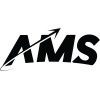
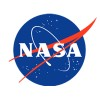

Georgia Tech Aerospace + Computer Science
Robotics researcher building reliable autonomy from first-principles dynamics to learned control.
Aerospace Engineering student at Georgia Tech focused on robotics research and real-world autonomy. I've built learned control systems for NASA robotic manipulators, simulated GNC algorithms at SpaceX, and currently research physics-informed policy learning and world-model RL. Interested in how classical dynamics and modern learning methods combine to make robots work reliably outside the lab.
About
I work on the boundary between robotics, guidance/navigation/control (GNC), and machine learning, with a focus on robust real-world autonomy. My experience spans spacecraft constellation simulation, kinematics learning for high-DOF manipulators, reinforcement learning world models, and satellite operations.
Across internships and research labs, I build software that is both principled and deployable: from Orekit-based orbit navigation tools and physics simulators in C++/Python to ROS2 systems that combine perception, planning, and language interfaces.
Experience
SpaceX · GNC Engineering Intern
- Designed and evaluated next-generation constellation architecture concepts and trades.
- Built physics-based simulation and analysis pipelines in Python and C++.
- Developed data visualization tooling with Matplotlib, Pandas, and Bokeh.
Skyfall Space · Software Engineer (Part-time)
- Contributed to NASA-funded CubeSat startup for orbital debris mitigation.
- Developed orbit and capture simulations plus debris propagation models.
Amentum @ NASA MSFC · Robotics and ML Intern
- Built deep learning architecture in PyTorch for forward and inverse kinematics on a 7-DOF arm.
- Created a novel inverse kinematics solution accepted toward NASA New Technology Report patent process.
- Integrated ROS2 edge systems with LLM + RAG control and perception modules for natural language interaction.
Georgia Tech Research · Undergraduate Research Assistant
- SSDL (GPDM Mission): navigation software for orbit propagation and thrust estimation using Orekit + Python.
- CEREAL Lab: Bayesian ML for wing pressure prediction and LLM-assisted aerodynamics insight systems.
- DREAM Lab: TD-MPC2 world-model RL and sim-to-real robustness benchmarks in Isaac Lab, MuJoCo, and MetaWorld.

Aero Maker Space · Prototyping Mentor (Part-time)
- Mentored students through aerospace design and fabrication workflows.
RoboJackets · Software and Mechanical Team
- Implemented autonomous rover navigation using ROS2 + C++ and LIDAR traversability mapping.
- Designed and machined robot components with mills, lathes, and waterjet workflows.
Georgia Tech VIP · Active Safety Researcher
- Built autonomous perception and avoidance stack on F1-Tenth platform with stereo depth and YOLO.

NASA · Intern and Peer Mentor Roles
- Command and data handling for high-altitude balloon telemetry systems.
- Remote sensing and lunar sensor experimentation in C++.
- Peer mentor for atmospheric and eclipse ballooning studies presented at AGU 2023.
Research Focus (Robotics + Autonomy)
My research sits at the intersection of classical aerospace dynamics and modern machine learning for autonomy. I focus on methods that are both theoretically grounded and deployable in safety-critical environments.
Robot Learning + Control
Implemented and evaluated TD-MPC2 world-model RL for robust, data-efficient control.
Spacecraft GNC + Mission Ops
Built orbit propagation and thrust estimation software and supported mission operations.
Embodied AI Systems
Developed perception-control stacks with kinematics learning, ROS2, and language interfaces.
DREAM Lab (Georgia Tech Europe)
Cross-domain world-model RL studies in Isaac Lab, MuJoCo, and MetaWorld.
CEREAL + SSDL + Dynamics & Controls Labs
Bayesian ML, F1-Tenth autonomy, and satellite operations software across GT labs.
Selected Projects
Neural Inverse Kinematics for 7-DOF Manipulator
Built a PyTorch architecture for forward/inverse kinematics with simulation data.
Constellation Trade Simulation Tools
Created simulation environments and metric dashboards for constellation design.
CubeSat Debris Mitigation Simulation
Built orbit and capture simulations for active orbital debris mitigation.
Autonomous Rover Traversability Mapping
Developed LIDAR-driven traversability mapping and motion planning in ROS2 + C++.
GRACE Data Visualization Dashboard
Built an interactive dashboard for GRACE satellite trend analysis.
Distracted Driving Prevention (OpenCV)
Developed an OpenCV pipeline for near real-time driver attention monitoring.
CEREAL LLM Testing
Evaluated LLM workflows for aerodynamics insight and research support.
FTC Skystone Robotics Codebase
Contributed to a robotics codebase in Java with systems-level debugging.
Publications & Presentations
My publication record spans robotics, distributed intelligence, aerodynamics, and atmospheric sensing, with work presented in IEEE, AIAA, and AGU venues.
- Save, A. Artificial Neural Networks for Solving Forward and Inverse Kinematics on a 7-DOF Robotic Manipulator. IEEE ICMRE 2026 (accepted for oral presentation and publication in IEEE Xplore).
- Lowman, W., Save, A., Ho, D., et al. A Distributed Intelligence Architecture for Responsive Command Handling in Edge Robotics. AIAA ASCEND 2026 (accepted oral presentation and publication).
- Lee, H., Save, A., Seshadri, P., et al. Large airfoil models. Computers and Fluids (2025). DOI link
- Exploring Atmospheric Effects During Solar Eclipses: High-Altitude Ballooning Data Collection & Analysis. American Geophysical Union (AGU) Fall Meeting 2023.
Skills
Choose a category to explore the stack I use across robotics research and real-world autonomy projects.
Programming & Software Engineering
PythonC++Java
MATLABJavaScript/TypeScriptSQL
OOP DesignData Structures & Algorithms
Scalable SystemsReal-time Systems
Robotics, Autonomy & Control
System ModelingDynamics & KinematicsPID
MPCMPPIKalman Filter
EKFPath PlanningAutonomous Systems
Machine Learning, AI & Perception
Neural NetworksSupervised LearningReinforcement Learning
Computer VisionSensor Fusion
Learning-based ModelingDecision-making
Simulation & Robotics Platforms
GazeboSimulinkMuJoCo
Isaac SimIsaac LabOpenCVPCL
Aerospace & GNC
Attitude Determination & ControlOrbital Mechanics
Spacecraft SystemsTrajectory Modeling
Tools & Systems
ROS2GitLinux/Unix
Data PipelinesSystem Integration
Certifications
Certified SolidWorks AssociateJava IT Specialist
Autodesk InventorMicrosoft Office Specialist